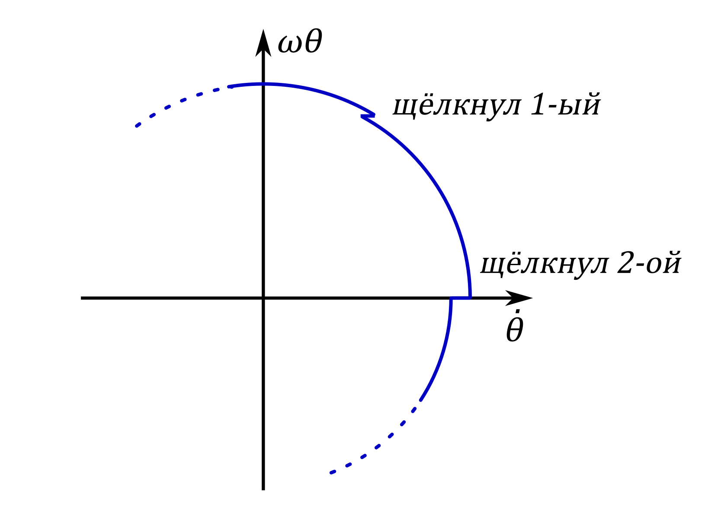

Y22 (2022) — English translation
It is clear from the graph that by $12$ the change in amplitude stops. The steady-state amplitude is $A=0.3$ rad. Let us immediately note that at such angles the approximation error $\sin x \approx x$ does not exceed $1.5\%$. In particular, for the purposes of this paragraph, frequency can be assumed to be independent of amplitude. The frequency can be found using the series method, for example $$ \omega = 2\pi \frac{16}{14.5c - 9.5c} = 20\; \text{s}^{-1}. $$Oscillation in остутствии подкачки energy описываются equation $$ ml^2\ddot{\theta} = -2ml^2\gamma\dot{\theta} - mgl \sin \theta $$ (law change moment momentum for pendulum). Заменяя in force сказаного выше $\sin \theta$ on $\theta$, $g$ on $l\omega^2$ and сокращая on $ml^2$ obtain equation гармонических oscillation: $$ \ddot{\theta} + 2\gamma \dot{\theta} + \omega^2 \theta = 0. $$ It solution with initial condition $\theta(0) = 0$, $\dot{\theta}(0) = A\omega$ is $$ \theta(t) = A e^{-\gamma t} \sin \omega t. $$ Denote $A_n$ value $A$ on $n$-that полупериоде. Each полупериод $\dot {\theta}$ increase on $\omega_D$, means $$ A_{n+1} = A_n e^{-\frac{\gamma \pi}{\omega}} + \frac{\omega_D}{\omega}. $$ Предельная amplitude be located from the condition $$ A = A e^{-\frac{\gamma \pi}{\omega}} + \frac{\omega_D}{\omega} $$ from which $A = \frac{\omega_D}{\omega} \left(1 - e^{-\frac{\gamma \pi}{\omega}}\right)^{-1}$. Рекуррентное relation on $A_n$ one can rewrite thus: $$ A - A_{n+1} = (A - A_n) e^{-\frac{\gamma \pi}{\omega}}. $$ This allows find $\gamma$ by нескольким пикам (in предположении that $\gamma$ мало and maximum value $\theta$ equal $A$): $$ \gamma = \frac{\omega}{\pi} \frac{1}{m - n} \ln \frac{A-A_n}{A-A_m}. $$ For example, $A_n = 0.14$, $A_m = 0.19$, $m - n = 6$ (number полупериодов вдвое larger number period). Be obtained $\gamma = 0.40$. $\gamma/\omega = 0.02$ and damping действительно мало. Остается find $\omega_D$. $$ \omega_D = \omega A \left(1 - e^{-\frac{\gamma \pi}{\omega}}\right) = 0.37 \; \frac{рад}с. $$
The answer is obtained by direct differentiation.
$$ \ddot{x}(t) = -\frac{\omega^2}{2}\left(A e^{i\omega t} + A^*e^{-i\omega t}\right) + \frac{1}{2}\left( i \omega \dot{A} e^{i\omega t} - i \omega A^* e^{-i\omega t} \right) $$Taking into account that we наложили condition $\dot{A} e^{i \omega t} + \dot{A^*} e^{-i \omega t} = 0$, we simplify this expression and get the answer.
We substitute the result into the oscillation equation: $$ -\frac{\omega^2}{2}\left(A e^{i\omega t} + A^*e^{-i\omega t}\right) + i \omega \dot{A} e^{i\omega t} + \gamma \left(i \omega A e^{i \omega t} -i\omega A^*e^{-i\omega t}\right) + \frac{\omega^2}{2}\left(A e^{i\omega t} + A^*e^{-i\omega t}\right) =\\= \varepsilon \frac{1}{8} \left(A e^{i \omega t} + A^*e^{-i\omega t}\right)^3 . $$ Hence express $\dot{A}$.
In the equation obtained in $\bf B3$, you simply need to discard all terms containing $e^{-in\omega t}$, $n\neq0$.
Putting $\gamma=0$ in the equation obtained in $\bf B4$, we obtain \[\dot A=-i\frac{3\varepsilon|A|^2}{8\omega}A.\]From geometric considerations it is clear that this equation describes the rotation of the vector $A$ in the complex plane without changing its modulus. Therefore, we look for a solution to the equation in the form \[A(t)=A_0e^{ist}.\]We obtain \[s=-\frac{3\varepsilon|A|^2}{8\omega},\]from which we immediately obtain the answers for $A(t)$ and $x(t)$.
Let us expand the sine into a Taylor series:\[\sin x\approx x-\frac16x^3.\]Thus, to a first approximation, the equation of oscillation of a pendulum is described by the equation from $\bf B4$ with\[\gamma=0,\quad\varepsilon=\frac16\omega^2.\]From $\bf B5$ we know that its solution can be represented in the form\[A(t) = A_0 \exp \left(-i \frac{|A_0|^2 \omega t}{16}\right)\implies\\\implies x(t)=\operatorname{Re}\left\{A_0\exp\left[i\left(1-\frac{1}{16}A^2\right)\omega t\right]\right\}.\]From here we immediately get the answer.
The board is acted upon by the tension forces of the pendulum threads, equal to a first approximation $mg\sin\theta_1$ and $mg\sin\theta_2$. According to Newton's third law, during a push, a force $-ml(D_1+D_2)$ also acts on the board. As a result, we get the answer.
The reference system of the board is a non-inertial reference system moving with acceleration $a=\frac FM$, then in Newton’s law for loads, as a first approximation, an additional term $-ma$ should appear. Rewriting it through the angles $\theta_1$ and $\theta_2$, we get the answer.
As found in $\bf A1$, the moment the axis $\dot{\theta}$ is crossed, the value of $\dot{\theta}$ changes to $\gamma\pi A$. When after some time this axis is crossed by the first pendulum, the second one also experiences a disturbance and its $\dot{\theta}$ changes to $\alpha \gamma \pi A$. The phase of oscillations, up to a constant equal to the angle through which the point on the phase portrait has rotated, decreases by \[\frac{\alpha \gamma \pi A \sin \psi}{\omega A} = \frac{\alpha \gamma\pi}{\omega}\sin\psi.\]When in the same way the click of the second metronome affects the phase of the first, the phase difference between them decreases again. Thus, over a half-period \[\Delta \psi = - 2 \frac{\alpha \gamma \pi}{\omega}\sin \psi.\]Over a period, this value will be twice as large.

Since we consider the attenuation to be small, the change in phases over a period turns out to be small. Therefore, we can go to the continuous limit and get the answer.
Let us rewrite the equations of motion of pendulums from $\bf C2$, taking into account the different frequencies of the pendulums. We get $$ \begin{cases}\ddot{\theta}_1+2\gamma\dot{\theta}_1+\omega_1^2 \theta_1 = \alpha\left[-(\theta_1+\theta_2)\omega^2+(D_1+D_2)\right]\\\ddot{\theta}_2+2\gamma\dot{\theta}_2+\omega_2^2 \theta_2 = \alpha\left[-(\theta_1+\theta_2)\omega^2+(D_1+D_2)\right]\end{cases} $$Then similarly⟦0⟧Синхронизация possible, when this equation have root, from which immediately same be obtained answer for $\Delta\omega_\max$.
With a steady phase difference between the metronomes $\dot\psi=0$. The answer is obtained by substituting this into the expression obtained in $\bf C5$.
It is necessary to solve the Kuramoto equation with the initial condition\[\psi(0)=0.5.\]We have\[\dot\psi=-B\sin\psi\implies\int_{0.5}^{\psi(t)}\frac{\mathrm d\psi}{\sin\psi}=\ln\bigg|\operatorname{tg}\frac\psi2\bigg|\Bigg|_{0.5}^{\psi(t)}=-Bt\implies\\\implies t(\psi)=\frac{\sin\psi_0}{\Delta\omega}\ln\left|\frac{\operatorname{tg}\frac\psi2}{\operatorname{tg}0.05}\right|.\]